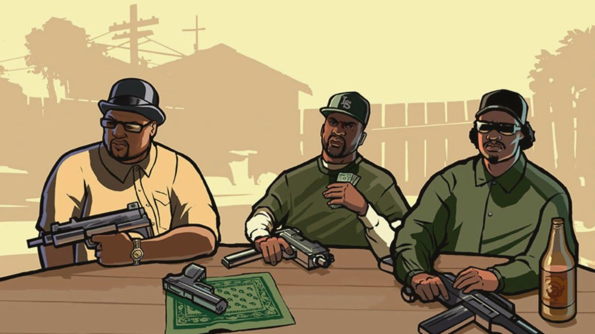
Grand Theft Auto: San Andreas acompanha a história de Carl "CJ" Johnson, que retorna à cidade de Los Santos após passar vários anos longe de casa. O motivo de seu retorno é a morte de sua mãe, mas ao chegar ele encontra sua família destruída, sua antiga gangue enfraquecida e seus amigos envolvidos em diversos problemas. Além disso, CJ passa a ser perseguido por policiais corruptos que o obrigam a realizar diversos serviços ilegais.
Durante sua jornada, CJ tenta reconstruir a Grove Street Families e recuperar o respeito perdido nas ruas. Ao longo do caminho, ele enfrenta gangues rivais, participa de grandes assaltos, trabalha para criminosos influentes e viaja por todo o estado de San Andreas, passando por Los Santos, San Fierro e Las Venturas. Cada cidade apresenta novos desafios, personagens e oportunidades que ajudam CJ a crescer no mundo do crime.
Conforme a história avança, CJ descobre diversas traições e conspirações que envolvem pessoas próximas a ele. Sua busca por vingança, respeito e poder o transforma em uma das figuras mais influentes do estado. O jogo aborda temas como família, lealdade, corrupção e ascensão social, mostrando a evolução de CJ de um simples membro de gangue para um verdadeiro líder.
Algo que torna San Andreas tão memorável é sua enorme liberdade de exploração, sua trilha sonora marcante e a grande variedade de atividades disponíveis. Até hoje, é considerado por muitos fãs como um dos melhores jogos já criados pela Rockstar Games.
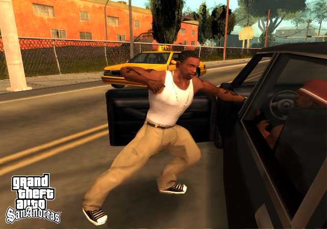
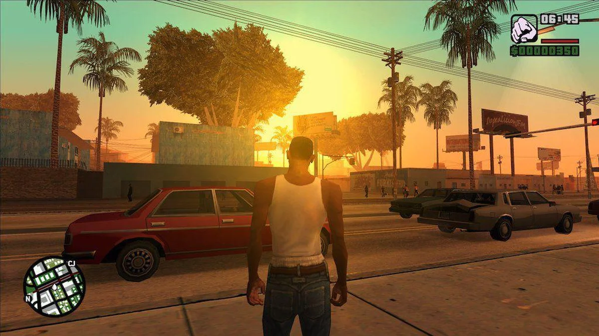
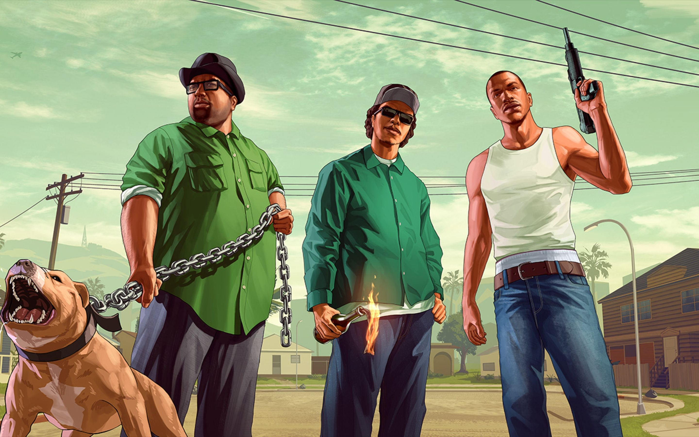
Grand Theft Auto: Vice City conta a história de Tommy Vercetti, um ex-integrante da máfia que acaba de sair da prisão após cumprir quinze anos por assassinato. Com sua liberdade recuperada, ele é enviado para Vice City para supervisionar uma negociação de drogas. No entanto, o acordo dá errado e Tommy perde tanto o dinheiro quanto a mercadoria, tornando-se alvo da máfia que financiou a operação.
Determinado a descobrir quem o traiu, Tommy inicia uma jornada pelo submundo criminoso de Vice City. Durante sua busca, ele faz alianças com traficantes, empresários, músicos e políticos corruptos, expandindo cada vez mais sua influência. Aos poucos, Tommy deixa de ser apenas um soldado da máfia para construir seu próprio império criminoso.
Ao longo da história, Tommy enfrenta diversos inimigos e assume o controle de propriedades estratégicas espalhadas pela cidade. Sua inteligência, ambição e brutalidade o ajudam a conquistar territórios e eliminar concorrentes, tornando-se um dos homens mais poderosos de Vice City.
Inspirado fortemente em filmes como Scarface e Miami Vice, o jogo apresenta uma atmosfera única dos anos 1980, com carros esportivos, roupas extravagantes e uma trilha sonora inesquecível. Essa combinação transformou Vice City em um dos títulos mais icônicos da franquia GTA.
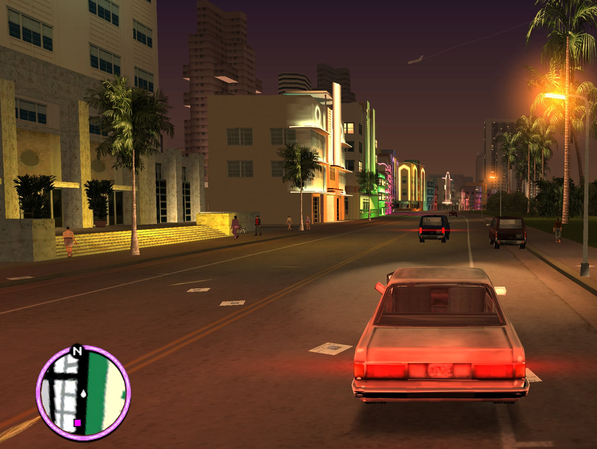
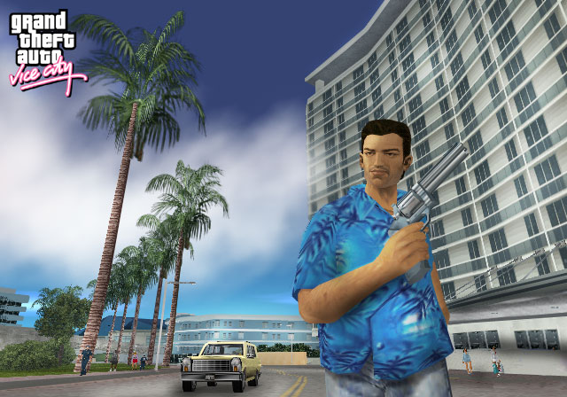
Grand Theft Auto IV acompanha Niko Bellic, um veterano de guerra do Leste Europeu que chega a Liberty City em busca de uma nova vida. Motivado pelas histórias de riqueza e sucesso contadas por seu primo Roman, Niko acredita que finalmente encontrará paz e prosperidade nos Estados Unidos. Porém, logo descobre que a realidade é muito diferente do que imaginava.
Conforme a trama avança, Niko enfrenta dilemas morais cada vez mais complexos. Muitas vezes ele precisa decidir entre vingança, dinheiro ou lealdade, escolhas que afetam diretamente o rumo da história e o destino de várias pessoas ao seu redor. Sua jornada mostra como o passado pode continuar perseguindo alguém, mesmo do outro lado do mundo.
Diferente dos jogos anteriores da franquia, GTA IV apresenta uma narrativa mais séria e realista. A história de Niko Bellic é considerada uma das mais profundas da série, abordando temas como imigração, guerra, ambição e as consequências da violência.
Além da campanha principal, a trajetória de Niko é marcada por constantes conflitos internos. Apesar de trabalhar para criminosos e cometer diversos crimes, ele frequentemente demonstra arrependimento e questiona suas próprias atitudes. Essa dualidade torna o personagem extremamente humano e ajuda a construir uma narrativa mais emocional, na qual o jogador acompanha não apenas a ascensão de Niko no submundo do crime, mas também sua luta para encontrar algum significado em sua vida.
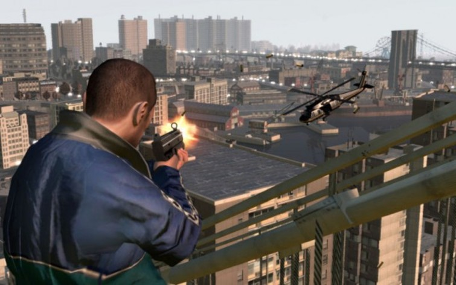
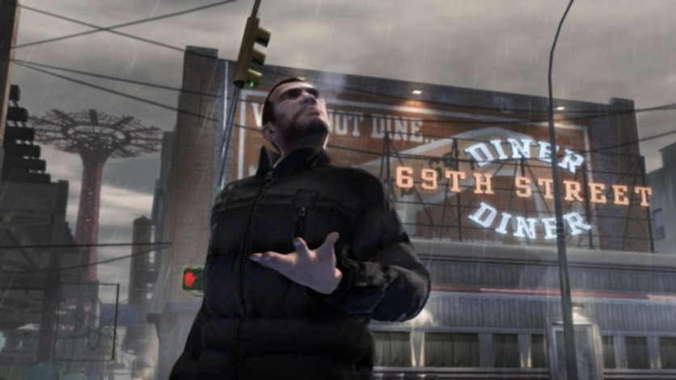
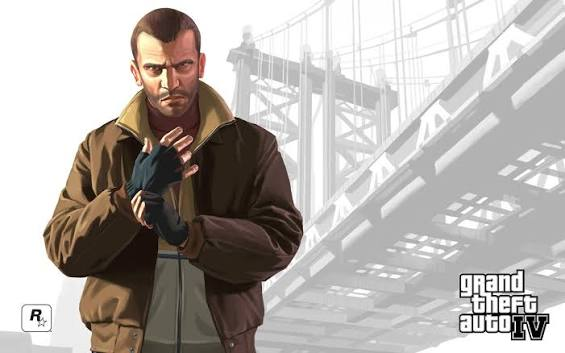
Grand Theft Auto V apresenta uma narrativa inédita na franquia ao permitir que o jogador acompanhe três protagonistas diferentes. Michael De Santa é um ex-assaltante de bancos que vive uma vida confortável, mas está frustrado com sua família e sua rotina. Franklin Clinton é um jovem ambicioso que deseja abandonar a vida nas ruas e conquistar algo maior. Já Trevor Philips é um criminoso extremamente violento e imprevisível que vive no interior do estado.
A história começa quando Michael e Franklin se conhecem durante um golpe que acaba mudando a vida de ambos. Pouco tempo depois, Trevor descobre que Michael está vivo, reunindo novamente antigos parceiros de crime. A partir desse momento, os três passam a realizar uma série de assaltos cada vez mais ousados, atraindo a atenção de criminosos, empresários poderosos e agentes do governo.
Enquanto tentam enriquecer, cada personagem enfrenta seus próprios problemas pessoais. Michael busca recuperar sua família, Franklin tenta construir um futuro melhor e Trevor luta contra seus impulsos destrutivos. As relações entre eles são constantemente colocadas à prova por conflitos, segredos e traições.
Um dos maiores destaques do jogo é a forma como as histórias dos três protagonistas se conectam. GTA V mistura ação, humor e crítica social em uma narrativa repleta de momentos memoráveis, tornando-se um dos jogos mais vendidos e populares de todos os tempos.
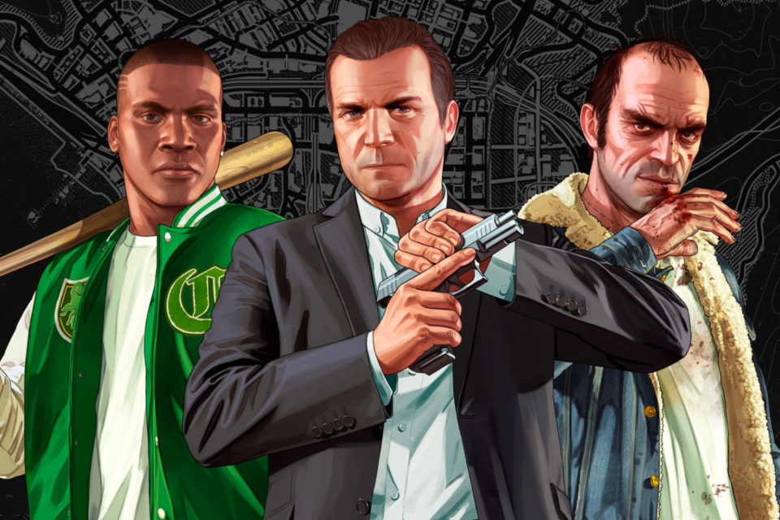
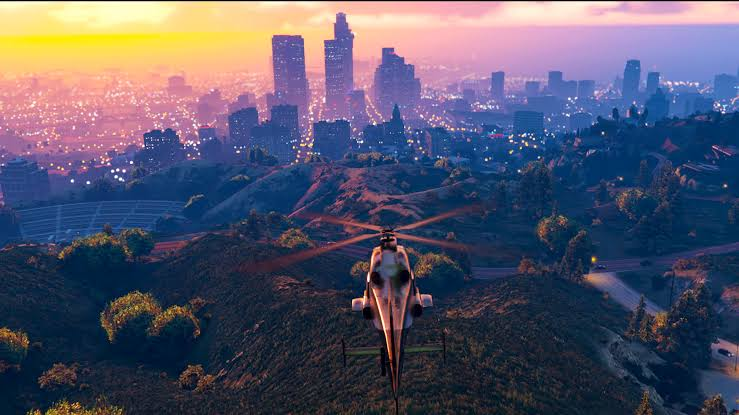
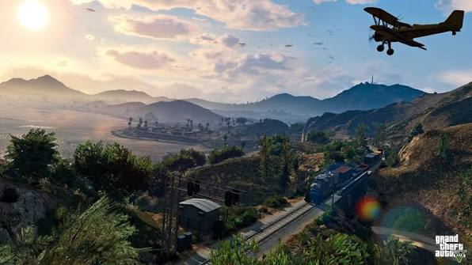
Grand Theft Auto VI se passa no estado fictício de Leonida, uma versão moderna da Flórida, e acompanha a história de Lucia e Jason. Os dois vivem uma relação próxima e atuam juntos no mundo do crime, realizando golpes e atividades ilegais para sobreviver em uma região marcada pela corrupção, violência e desigualdade.
A trama começa quando um trabalho aparentemente simples acaba dando errado, colocando a dupla no centro de uma conspiração muito maior do que eles imaginavam. A partir desse momento, Lucia e Jason passam a ser perseguidos por criminosos, autoridades e organizações que possuem interesses próprios, obrigando-os a confiar um no outro para continuar vivos.
Ao longo da história, os protagonistas precisam enfrentar situações cada vez mais perigosas, incluindo assaltos, perseguições policiais e conflitos com grandes grupos criminosos. O relacionamento entre os dois será uma das partes centrais da narrativa, influenciando diretamente suas decisões e o rumo dos acontecimentos.
Inspirado em histórias clássicas de criminosos apaixonados, como Bonnie e Clyde, GTA VI promete apresentar uma das narrativas mais emocionantes da franquia. Além disso, o jogo traz uma representação moderna do crime, explorando temas como redes sociais, influência digital, corrupção e a busca por poder em um mundo conectado.
Outro aspecto que promete diferenciar GTA VI dos títulos anteriores é o foco na relação entre os protagonistas. Diferente de outras histórias da franquia, onde os personagens geralmente possuem objetivos individuais, Lucia e Jason precisam trabalhar juntos constantemente para superar os desafios que surgem.
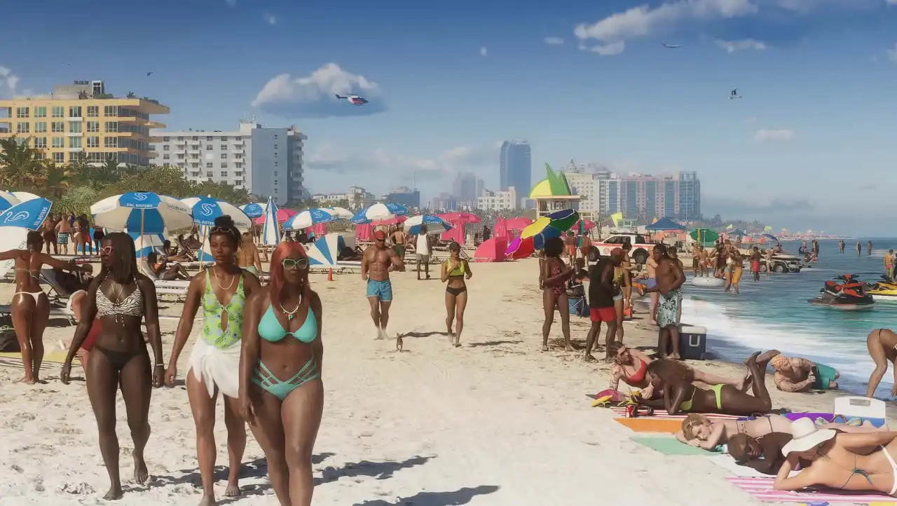
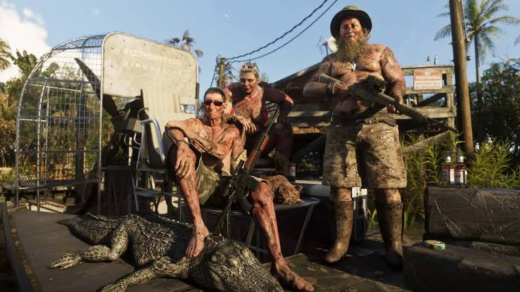
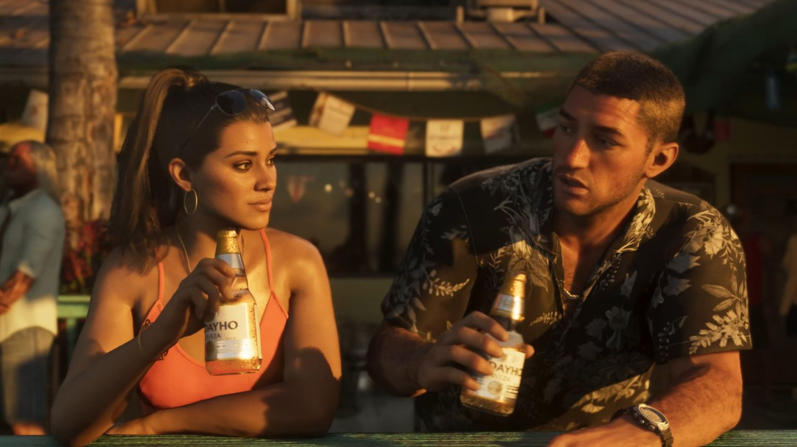
Conheça os principais personagens do universo GTA, contendo os principais personagens da franquia. Abaixo, há cards com os nomes dos mesmos, e uma explicação referente ao que se passa com eles dentro dos jogos.
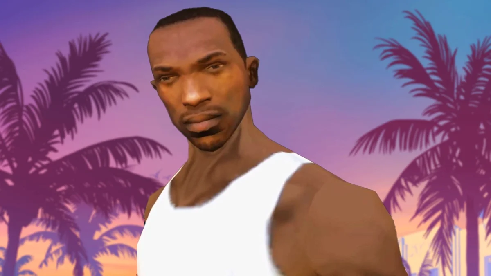
Carl Johnson, conhecido como CJ, retorna à sua cidade natal após anos distante. Sua história envolve família, lealdade e ascensão ao poder, enfrentando gangues rivais e corrupção para reconstruir sua vida.
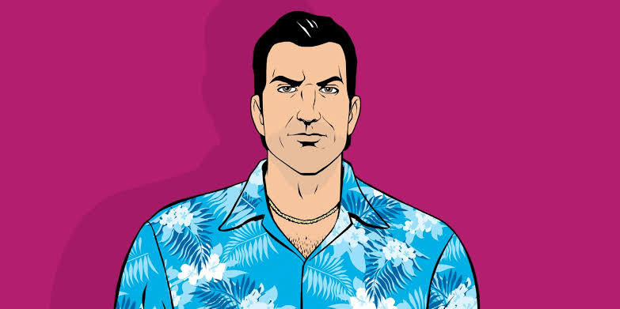
Tommy Vercetti é um ex-criminoso que busca conquistar o submundo de Vice City. Sua trajetória mistura ambição, vingança e negócios ilegais enquanto constrói um império do crime.
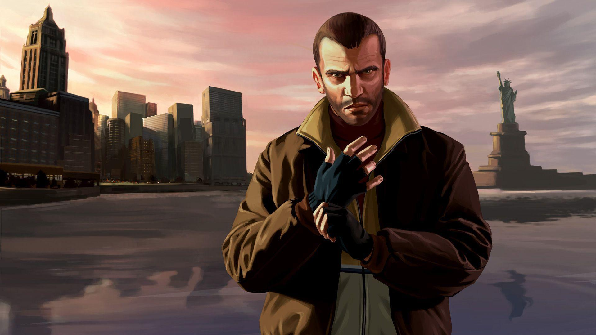
Niko Bellic chega aos Estados Unidos em busca de uma vida melhor. Sua jornada explora passado, sobrevivência e desilusões, revelando o lado mais sombrio do sonho americano.
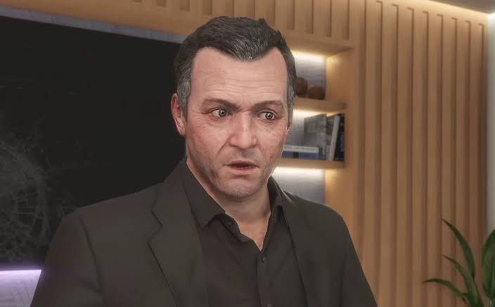
Michael De Santa é um ex-assaltante de bancos vivendo uma vida aparentemente tranquila. Entre conflitos familiares e crimes arriscados, ele busca recuperar o controle do próprio destino.
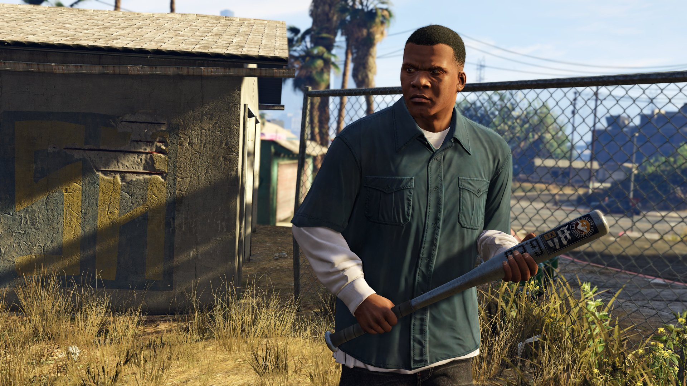
Franklin Clinton é um jovem determinado a escapar da criminalidade de bairro. Sua trajetória envolve oportunidades, crescimento pessoal e a busca por uma vida mais bem-sucedida.
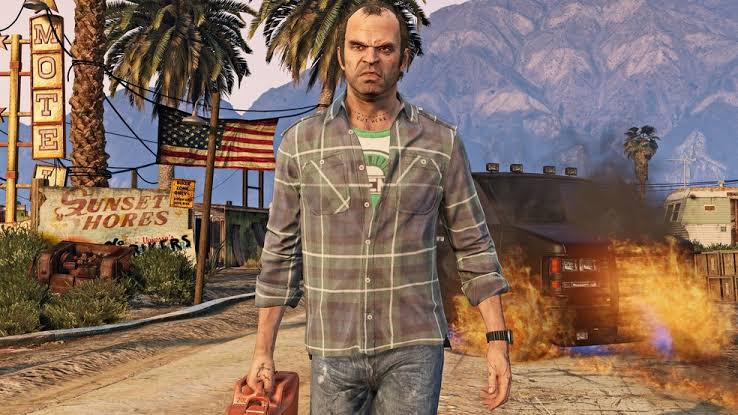
Trevor Philips é um criminoso imprevisível e extremamente violento. Sua história destaca caos, impulsividade e amizades complexas, tornando-o um dos personagens mais marcantes da série.